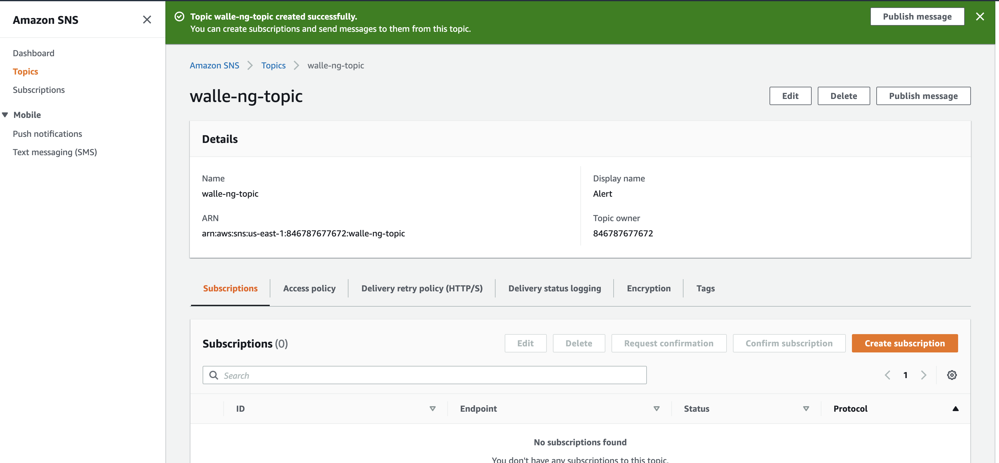
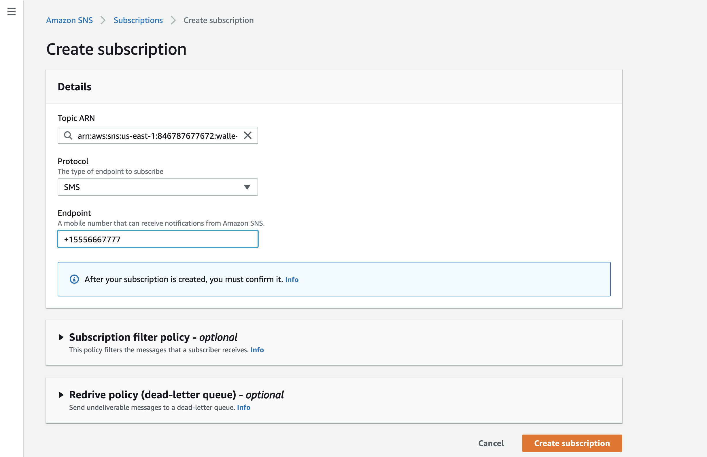
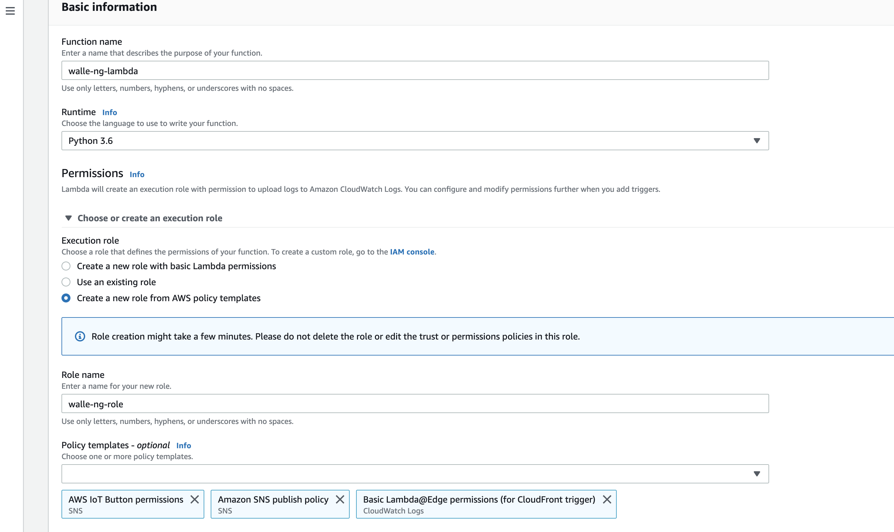
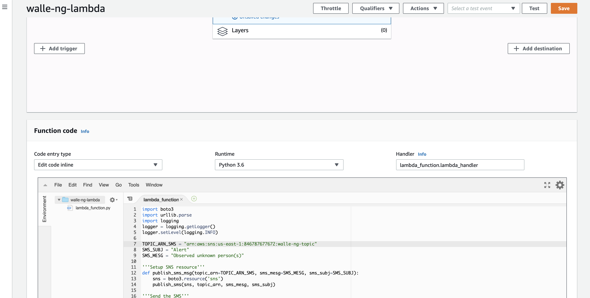
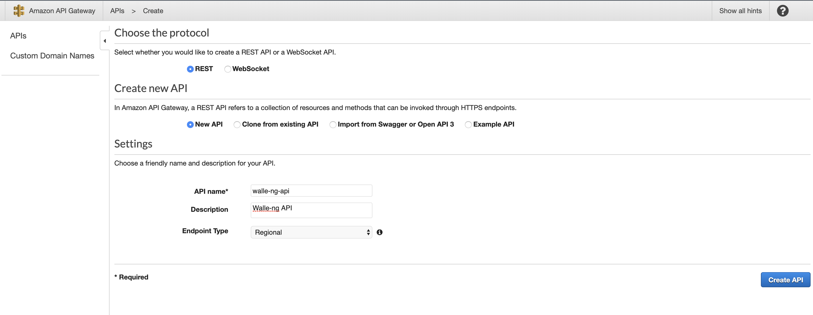
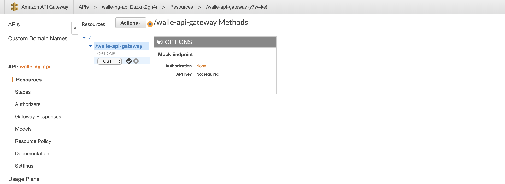
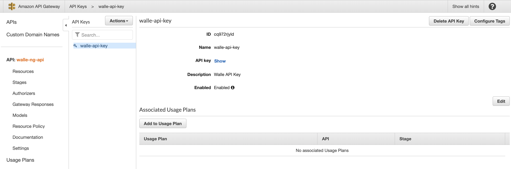
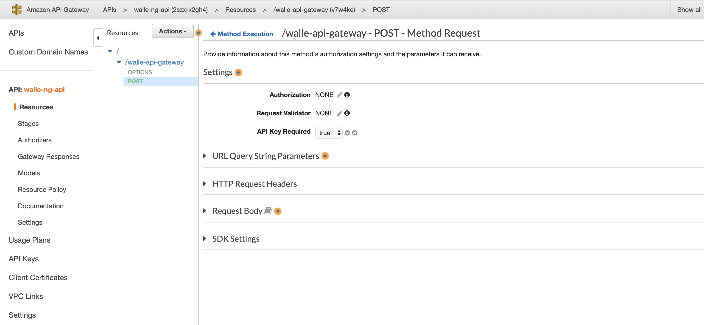

    <main class="jupyter-page">
    <div class="jb_cell">

<div class="cell border-box-sizing text_cell rendered"><div class="inner_cell">
<div class="text_cell_render border-box-sizing rendered_html">
<h1 id="Setting-up-Amazon-Web-Services">Setting up Amazon Web Services<a class="anchor-link" href="#Setting-up-Amazon-Web-Services"> </a></h1><p>All the services used in this tutorial qualify for <strong><a href="https://aws.amazon.com/free/">AWS Free Tier</a></strong> usage. If you do not have AWS console access, you will need to create an account on the <strong><a href="https://aws.amazon.com/console/">AWS website</a></strong>. This section will provide details on setting up AWS SNS, API Gateway, and Lambda.</p>
<h2 id="AWS-Simple-Notification-Services-(SNS)">AWS Simple Notification Services (SNS)<a class="anchor-link" href="#AWS-Simple-Notification-Services-(SNS)"> </a></h2><p>SNS is a highly available, durable, secure, fully managed pub/sub messaging service that can be configured to send SMS or email messages to devices that subscribe to an SNS topic. For this project, one SNS topic will be created, and a mobile device will be configured as a subscriber to the topic. This is necessary to receive messages that are triggered from walle-ng events. In the AWS console, go to Simple Notification Services and perform the following actions:</p>
<p>Simple Notification Service (SNS) --&gt; Topics --&gt; Create topic</p>
<p>Set the following settings:</p>
<ul>
<li>Name: walle-sns-topic</li>
<li>Display name: Alert</li>
<li>Click --&gt; Create topic</li>
</ul>
<p>Once the topic is created, a view similar to the image below should be visible. Copy down the ARN associated with the walle-sns-topic. In this example, it is <code>arn:aws:sns:us-east-1:846787677672:walle-ng-topic</code>.</p>
<p></p>
<p>Create a subscription to the topic:</p>
<ul>
<li>Click --&gt; Create subscription</li>
<li>Topic ARN: select the walle-sns-topic (if not already selected)</li>
<li>Protocol: SMS (or email if you wish)</li>
<li>Endpoint: +15556667777 (Enter phone number, or email if email was selected)</li>
<li>Click --&gt; Create subscription</li>
</ul>
<p></p>
<p>SNS should be set up to send SMS messages to a mobile device. It is recommended to publish a test message to verify setup. In order to publish a test message, perform the following actions:</p>
<ul>
<li>In the sidebar, select Topics --&gt; walle-ng-topic</li>
<li>Click --&gt; Publish message</li>
<li>Subject: Test</li>
<li>Message Body: Test Test</li>
<li>Click --&gt; Publish message</li>
</ul>
<h2 id="AWS-Lambda">AWS Lambda<a class="anchor-link" href="#AWS-Lambda"> </a></h2><p>AWS Lambda lets you run code without provisioning or managing servers. It is serverless, and will only run when a a POST request is made to API Gateway. Lambda will be responsible for parsing POST requests from walle-ng and publishing SNS messages. In AWS console, go to Lambda and perform the following actions:</p>
<p>Lambda --&gt; Create Function --&gt; Select "Author from scratch"</p>
<p>In the Basic information section, set the following actions:</p>
<ul>
<li>Function name: walle-ng-lambda</li>
<li>Runtime      : Python3.6</li>
<li>Role Name    : walle-ng-role</li>
<li>Permissions  : Basic Lambda, Amazon SNS publish policy</li>
<li>Click --&gt; Create Function</li>
</ul>
<p></p>
<p>Once the Lambda function is created, scroll down to the <code>Function code</code> section and copy/paste the code below into the <code>lambda_function.py</code> script. Under <code>TOPIC_ARN_SMS</code>, change the value <code>&lt;sns_topic_arn&gt;</code> to the ARN you noted when you created the <code>walle-ng-topic</code>. For this example, <code>&lt;sns_topic_arn&gt;</code> would be changed to <code>arn:aws:sns:us-east-1:846787677672:walle-ng-topic</code>.</p>
<p>When done, click --&gt; Save.</p>
<div class="highlight"><pre><span></span><span class="kn">import</span> <span class="nn">boto3</span>
<span class="kn">import</span> <span class="nn">urllib.parse</span>
<span class="kn">import</span> <span class="nn">logging</span>
<span class="n">logger</span> <span class="o">=</span> <span class="n">logging</span><span class="o">.</span><span class="n">getLogger</span><span class="p">()</span>
<span class="n">logger</span><span class="o">.</span><span class="n">setLevel</span><span class="p">(</span><span class="n">logging</span><span class="o">.</span><span class="n">INFO</span><span class="p">)</span>

<span class="n">TOPIC_ARN_SMS</span> <span class="o">=</span> <span class="s2">&quot;&lt;sns_topic_arn&gt;&quot;</span>
<span class="n">SMS_SUBJ</span> <span class="o">=</span> <span class="s2">&quot;Alert&quot;</span>
<span class="n">SMS_MESG</span> <span class="o">=</span> <span class="s2">&quot;Observed unknown person(s)&quot;</span>

<span class="sd">&#39;&#39;&#39;Setup SNS resource&#39;&#39;&#39;</span>
<span class="k">def</span> <span class="nf">publish_sms_msg</span><span class="p">(</span><span class="n">topic_arn</span><span class="o">=</span><span class="n">TOPIC_ARN_SMS</span><span class="p">,</span> <span class="n">sms_mesg</span><span class="o">=</span><span class="n">SMS_MESG</span><span class="p">,</span> <span class="n">sms_subj</span><span class="o">=</span><span class="n">SMS_SUBJ</span><span class="p">):</span>
    <span class="n">sns</span> <span class="o">=</span> <span class="n">boto3</span><span class="o">.</span><span class="n">resource</span><span class="p">(</span><span class="s1">&#39;sns&#39;</span><span class="p">)</span>
    <span class="n">publish_sms</span><span class="p">(</span><span class="n">sns</span><span class="p">,</span> <span class="n">topic_arn</span><span class="p">,</span> <span class="n">sms_mesg</span><span class="p">,</span> <span class="n">sms_subj</span><span class="p">)</span>

<span class="sd">&#39;&#39;&#39;Send the SMS&#39;&#39;&#39;</span>
<span class="k">def</span> <span class="nf">publish_sms</span><span class="p">(</span><span class="n">sns</span><span class="p">,</span> <span class="n">topic_arn</span><span class="p">,</span> <span class="n">sms_mesg</span><span class="p">,</span> <span class="n">sms_subj</span><span class="p">):</span>
    <span class="n">topic</span> <span class="o">=</span> <span class="n">sns</span><span class="o">.</span><span class="n">Topic</span><span class="p">(</span><span class="n">topic_arn</span><span class="p">)</span>
    <span class="n">topic</span><span class="o">.</span><span class="n">publish</span><span class="p">(</span><span class="n">Message</span><span class="o">=</span><span class="n">sms_mesg</span><span class="p">,</span> <span class="n">Subject</span><span class="o">=</span><span class="n">sms_subj</span><span class="p">)</span>

<span class="sd">&#39;&#39;&#39;Event handler&#39;&#39;&#39;</span>
<span class="k">def</span> <span class="nf">lambda_handler</span><span class="p">(</span><span class="n">event</span><span class="p">,</span> <span class="n">context</span><span class="p">):</span>
    <span class="k">if</span> <span class="n">event</span><span class="p">[</span><span class="s1">&#39;httpMethod&#39;</span><span class="p">]</span> <span class="o">==</span> <span class="s1">&#39;POST&#39;</span><span class="p">:</span>
        <span class="n">msg</span> <span class="o">=</span> <span class="n">event</span><span class="p">[</span><span class="s1">&#39;body&#39;</span><span class="p">]</span>
        <span class="n">msg</span> <span class="o">=</span> <span class="n">urllib</span><span class="o">.</span><span class="n">parse</span><span class="o">.</span><span class="n">parse_qs</span><span class="p">(</span><span class="n">msg</span><span class="p">)</span>
        <span class="k">if</span> <span class="n">msg</span><span class="p">[</span><span class="s1">&#39;message&#39;</span><span class="p">]:</span>
            <span class="n">alert</span> <span class="o">=</span> <span class="n">msg</span><span class="p">[</span><span class="s1">&#39;message&#39;</span><span class="p">][</span><span class="mi">0</span><span class="p">]</span>
            <span class="n">logger</span><span class="o">.</span><span class="n">info</span><span class="p">(</span><span class="n">alert</span><span class="p">)</span>
            <span class="n">publish_sms_msg</span><span class="p">(</span><span class="n">sms_mesg</span><span class="o">=</span><span class="n">alert</span><span class="p">)</span>
            <span class="k">return</span> <span class="p">{</span>
                <span class="s1">&#39;statusCode&#39;</span><span class="p">:</span> <span class="mi">200</span><span class="p">,</span>
                <span class="s1">&#39;headers&#39;</span><span class="p">:</span> <span class="p">{</span>
                    <span class="s1">&#39;Content-Type&#39;</span><span class="p">:</span> <span class="s1">&#39;application/json&#39;</span>
                <span class="p">},</span>
                <span class="s1">&#39;body&#39;</span><span class="p">:</span> <span class="s1">&#39;OK&#39;</span>
            <span class="p">}</span>
        <span class="k">else</span><span class="p">:</span>
            <span class="k">return</span> <span class="p">{</span>
                <span class="s1">&#39;statusCode&#39;</span><span class="p">:</span> <span class="mi">499</span><span class="p">,</span>
                <span class="s1">&#39;headers&#39;</span><span class="p">:</span> <span class="p">{</span>
                    <span class="s1">&#39;Content-Type&#39;</span><span class="p">:</span> <span class="s1">&#39;application/json&#39;</span>
                <span class="p">},</span>
                <span class="s1">&#39;body&#39;</span><span class="p">:</span> <span class="s1">&#39;Go Away!&#39;</span>
            <span class="p">}</span>
    <span class="k">else</span><span class="p">:</span>
        <span class="k">return</span> <span class="p">{</span>
            <span class="s1">&#39;statusCode&#39;</span><span class="p">:</span> <span class="mi">499</span><span class="p">,</span>
            <span class="s1">&#39;headers&#39;</span><span class="p">:</span> <span class="p">{</span>
                <span class="s1">&#39;Content-Type&#39;</span><span class="p">:</span> <span class="s1">&#39;application/json&#39;</span>
            <span class="p">},</span>
            <span class="s1">&#39;body&#39;</span><span class="p">:</span> <span class="s1">&#39;Go Away!&#39;</span>
        <span class="p">}</span>
</pre></div>
<p>The final output should look similar to the following:</p>
<p></p>
<p>In the next step, verify that the Lambda function is set up correctly by executing a test. Perform the following actions in the Lambda console:</p>
<ul>
<li>Click --&gt; Test</li>
<li>Check --&gt; Create new Test</li>
<li>Event name --&gt; SMSTest</li>
<li>Replace the JSON with the following and click --&gt; create</li>
</ul>
<div class="highlight"><pre><span></span><span class="o">{</span>
    <span class="s1">&#39;httpMethod&#39;</span>: <span class="s1">&#39;POST&#39;</span>,
    <span class="s1">&#39;body&#39;</span>: <span class="s1">&#39;message=Observed+test&#39;</span>
<span class="o">}</span>
</pre></div>
<ul>
<li>Click --&gt; Actions --&gt; Publish new version</li>
<li>Click --&gt; Test</li>
</ul>
<p>You should receive an SMS message to the phone number that was subscribed to the SNS topic. A successful message indicates that Lambda is configured properly to work with SNS.</p>
<h2 id="AWS-API-Gateway">AWS API Gateway<a class="anchor-link" href="#AWS-API-Gateway"> </a></h2><p>Amazon API Gateway is a fully managed service that makes it easy for developers to publish, maintain, monitor, secure, and operate custom APIs. API Gateway will be configured to accept POST requests containing messages from walle-ng. To add a layer of security to endpoint devices communicating with the API, an API key will be generated and walle-ng will be configured to use the API for each call. In AWS console, go to API Gateway and perform the following actions:</p>
<p>API Gateway --&gt; Create API</p>
<p>Set the following:</p>
<ul>
<li>API name: walle-ng-api</li>
<li>Description: Walle-ng API</li>
<li>Click --&gt; Create api</li>
</ul>
<p></p>
<p>Select walle-ng-api --&gt; Actions --&gt; Create Resource</p>
<p>Set the following:</p>
<ul>
<li>Resource name: Walle API Gateway</li>
<li>Resource path: walle-api-gateway</li>
<li>Check --&gt; Enable API Gateway CORS</li>
<li>Click --&gt; Create resource</li>
<li>Click --&gt; Actions --&gt; Create method</li>
<li>Select --&gt; POST (when done, push the check mark button next to the drop down list)</li>
</ul>
<p></p>
<p>In the POST setup window, set the following:</p>
<ul>
<li>Integration type: Lambda</li>
<li>Check --&gt; Use Lambda Proxy integration</li>
<li>Lambda function: walle-ng-lambda</li>
<li>Click --&gt; Save</li>
<li>Add Permission to Lambda Function click --&gt; Ok</li>
</ul>
<p>In the left sidebar, select API Keys</p>
<ul>
<li>Click --&gt; API Keys --&gt; Actions --&gt; Create API Keys</li>
</ul>
<p>Set the following:</p>
<ul>
<li>Name: walle-api-key</li>
<li>Description: Walle API Key</li>
<li>After the key is created, select the api key name --&gt; Show (next to API Key). Write down the API key so it can be referenced in the future.</li>
</ul>
<p></p>
<p>In the left sidebar, select APIs --&gt; walle-ng-api</p>
<p>Set the following:</p>
<ul>
<li>Click --&gt; POST --&gt; Method Request</li>
<li>Click --&gt; API key required --&gt; True --&gt; Click the checkmark to save</li>
<li>Click --&gt; OPTIONS --&gt; Method Request</li>
<li>Click --&gt; API key required --&gt; True --&gt; Click the checkmark to save</li>
<li>Click --&gt; Actions --&gt; Enable CORS --&gt; Enable CORS and replace existing CORS headers --&gt; Yes, replace exsting values</li>
</ul>
<p></p>
<p>Set the following values in Deploy API:</p>
<ul>
<li>Click --&gt; Actions --&gt; Deploy API</li>
<li>Stage --&gt; Stage</li>
<li>Stage ame --&gt; prod</li>
<li>Click --&gt; Deploy</li>
</ul>
<p>Make note of the Invoke URL. This value will be used in the Walle client config. In this example, the Invoke URL is <code>https://2szxrk2gh4.execute-api.us-east-1.amazonaws.com/prod</code>. In order to generate the URL that POST request will be sent to, add <code>walle-ng-api</code> to the end of the Invoke URL. The final URL for this example would be <code>https://2szxrk2gh4.execute-api.us-east-1.amazonaws.com/prod/walle-ng-api</code>.</p>
<p>Before continuing to the Raspberry Pi installation section, make sure the endpoint URL and the API key area available in a notepad. During the walle-ng install, a script will ask for these values to make setup easier.</p>

</div>
</div>
</div>
</div>

 


    </main>
    